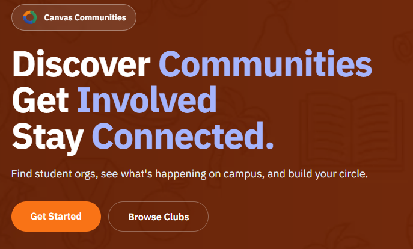

Canvas Communities
Campus engagement platform
React
TypeScript
FastAPI
PostgreSQL
Canvas Communities is a site for discovering and organizing student communities on campus. I worked on the full stack, from the user flow and frontend features to the backend APIs and deployment.
157
seeded communities ranked dynamically
113
tags used in recommendation scoring
3
services used in deployment